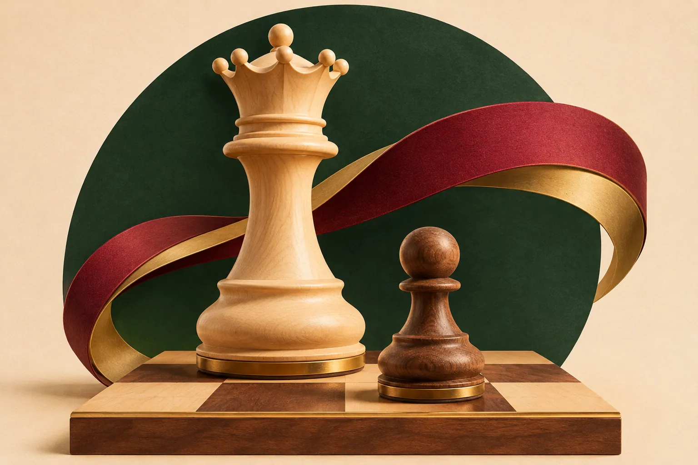
Le gambit dame commence par 1. d4 d5 2. c4. Les Blancs proposent leur pion c pour contester le pion noir d5. Les Noirs peuvent accepter par …dxc4 ou maintenir leur centre, par exemple avec …e6. Le nom ne signifie pas que la dame blanche est sacrifiée.
- Avec les Blancs
- 1. d4 d5 2. c4
- Repère ECO : D06
Un gambit est une offre de matériel faite pour obtenir une autre forme d’activité. Ici, la question de débutant est simple : faut-il chercher à conserver un pion ou développer ses pièces ? Vous allez observer comment une capture transforme le centre.
Cette ouverture convient pour découvrir la lutte centrale après 1. d4. Elle vous fera comparer des structures de pions plutôt que chercher une attaque immédiate contre le roi.
À retenir avant de jouer
- Votre objectif
- Contester d5 avec c4 et profiter du développement pour récupérer le pion si les Noirs le prennent.
- La décision au centre
- Choisir entre maintenir la tension et échanger en d5 selon les diagonales libérées.
- Le point de vigilance
- Un cavalier cloué devant la dame peut encore bouger : vérifier les échecs intermédiaires.
Dans ce guideChoisissez votre point de départ
Sur l’échiquier
Les premiers coups, un à un
Dans la notation française, C = cavalier, F = fou, D = dame et O-O = petit roque. T = tour et R = roi. Le signe x indique une capture, + un échec et # un mat. Les points de suspension indiquent un coup des Noirs.
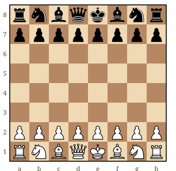
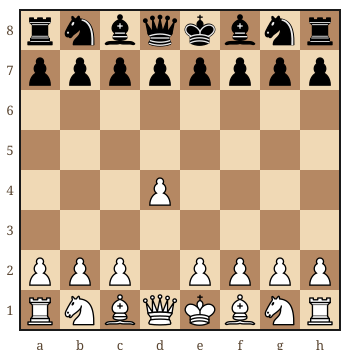
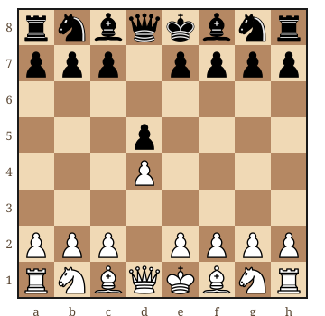
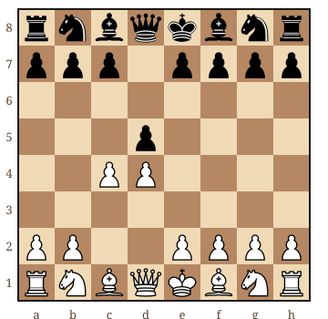
Ce que chaque coup accomplit
- 1. d4
Le pion d4 occupe le centre et libère la diagonale du fou c1.
- 1…d5
Les Noirs occupent d5 et s’opposent au pion blanc.
- 2. c4
Le pion c4 attaque d5 et peut être capturé par ce pion : c’est l’offre du gambit dame.
Votre fil conducteur
Trois idées à garder en tête
Échanger un pion de côté contre un pion central
Si le pion d5 prend en c4, il quitte le centre. Les Blancs peuvent alors chercher de l’activité et un soutien solide pour d4.
Préparer la récupération
Après …dxc4, e3 ouvre la diagonale du fou f1 vers c4. Le pion pourra être repris si les réponses noires le permettent.
Développer avant de chasser tous les pions
Ne dépensez pas plusieurs coups de dame pour récupérer le pion à tout prix. Observez comment une sortie de fou peut faire ce travail tout en développant une pièce.
Un exemple court pour comprendre le plan
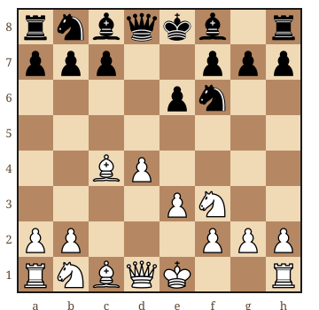
Les Noirs ont accepté l’offre. Les Blancs développent Cf3, ouvrent le passage du fou avec e3 puis reprennent en c4 après …e6. Cela illustre une récupération naturelle ; les Noirs ne sont pas obligés de choisir exactement cette suite.
Deux réponses noires à reconnaître
2…dxc4 : Le gambit accepté
Le pion d5 capture le pion c4. Cherchez le développement et une manière de préparer la reprise, sans paniquer devant le pion de moins.
2…e6 : Le gambit refusé
Le pion e6 soutient d5. La tension entre les pions c4 et d5 reste présente ; les deux camps continuent leur développement.
Ce sont des repères pour vous orienter. Vous n’avez pas besoin de mémoriser leurs ramifications pour commencer à jouer.
Comprendre ce qui se joue
Lire le centre et la structure de pions
Le pion c4 attaque d5 sans être soutenu par le pion d4 : les deux pions blancs sont côte à côte, ils ne se défendent pas. L’offre est donc réelle sur le coup, mais elle possède une idée centrale. Si le pion d5 prend c4, les Noirs retirent un de leurs pions du centre. Les Blancs peuvent alors chercher du développement et préparer une récupération du pion.
Après un refus par …e6, les Noirs renforcent d5 avec le pion e6. Si les Blancs jouent cxd5 et que les Noirs répondent …exd5, le pion arrivé en d5 n’est plus le même : c’est l’ancien pion e. Les pions c blanc et d noir ont disparu. Le fou c8 peut retrouver une diagonale grâce au départ du pion e6. L’échange a donc un effet matériel, mais aussi un effet sur les pièces.
Dans le gambit accepté, e3 peut ouvrir la diagonale f1–e2–d3–c4 pour le fou blanc. Cela fournit une manière de récupérer le pion qui contribue en même temps au développement. Mais les Noirs peuvent tenter d’autres défenses du pion, ou rendre le matériel pour développer leurs pièces. Il faut regarder ce qu’ils font réellement et éviter de transformer « souvent récupérable » en « automatiquement repris ».
Quelles cases chercher pour vos pièces ?
Ces placements sont des repères à vérifier dans la position, pas des coups à jouer sans regarder l’adversaire.
- Cavalier g1f3
- Il soutient d4 et participe à la lutte pour e5. Son développement évite de consacrer tous les coups à la récupération d’un pion.
- Cavalier b1c3 selon la structure
- Il renforce d5 et e4. Vérifiez les clouages et les attaques possibles avant de compter toutes ses défenses comme permanentes.
- Fou f1c4 après e3 dans le gambit accepté
- La reprise Fxc4 est possible si la diagonale est libre et si la position permet de reprendre sans danger.
- Fou c1une diagonale choisie avant ou après e3
- Le pion e3 peut gêner sa sortie. Ne développez pas tous les autres éléments du schéma en oubliant ce fou.
- Pion d4 et roimaintenir un centre défendable, puis roquer
- L’espace central doit être soutenu. Un pion en d4 devient une cible si les pièces chargées de le défendre partent ailleurs.
Comment réagir aux idées adverses
Si les Noirs prennent en c4
Identifiez les moyens de développer une pièce en préparant la reprise. e3 peut libérer le fou f1 ; Cf3 peut être joué sans chercher tout de suite le pion. Si les Noirs veulent le soutenir par des pions de l’aile dame, cela crée d’autres décisions : ne sortez pas la dame au hasard pour courir après lui.
Si les Noirs soutiennent d5 par …e6
Vous pouvez maintenir la tension ou envisager cxd5. Avant de prendre, imaginez …exd5 : quelle diagonale s’ouvre pour le fou c8 ? Quelle colonne perd un pion ? Cette lecture évite de choisir un échange seulement parce qu’il est disponible.
Si les Noirs choisissent …c6
Vous entrez dans une structure de défense slave. Le pion c6 peut reprendre en d5 et le pion e7 n’a pas encore fermé le fou c8. La réponse au gambit ne se résume donc pas à « accepté ou refusé » : le pion utilisé pour soutenir d5 change le travail des pièces.
Une décision concrète
Un échange peut aussi libérer une pièce adverse
Les Blancs ont pris en d5, les Noirs ont repris avec leur pion e6. Comparez la position à celle d’avant l’échange : le pion e6 a quitté la diagonale du fou c8.
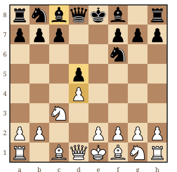
Que faut-il voir avant de continuer le développement blanc ?
Repérez d’abord les menaces et les cases contrôlées, puis proposez une réponse.
Lire l’analyse de la position
Les Noirs possèdent maintenant un pion en d5 et une diagonale de fou c8 plus libre. Les Blancs peuvent poursuivre par 5. Cf3, qui développe une pièce et soutient d4. Ce coup illustre un développement cohérent, sans prétendre être forcé. La vraie question de lecture était de reconnaître le changement de structure et l’activité rendue au fou adverse.
Comparer pour comprendre
Garder le pion du gambit : les diagonales comptent aussi
Les Noirs peuvent chercher à conserver le pion pris en c4 en avançant leurs pions de l’aile dame. Les Blancs doivent alors observer les lignes libérées, pas seulement compter le pion de moins. Une chaîne de soutien coûte des coups et peut déplacer les obstacles qui protégeaient une tour.
L’atelier part d’une tentative de maintien du pion : …b5, a4, …c6, axb5 et …cxb5. Le pion b7 a quitté sa case et le pion c6 s’est déplacé en b5. La grande diagonale f3–e4–d5–c6–b7–a8 peut donc devenir libre. Cette suite sert à apprendre à lire une diagonale ; elle n’est pas une réponse noire recommandée.
Position commune de départ :
1. d4 d5 2. c4 dxc4 3. e3 b5 4. a4 c6 5. axb5 cxb5
Rejouez cette position, puis comparez les suites ci-dessous. Ce sont des exemples commentés : elles ne constituent pas deux recommandations équivalentes ni des coups à reproduire sans calculer.
Df3 : voir la tour derrière les cases libérées
6. Df3
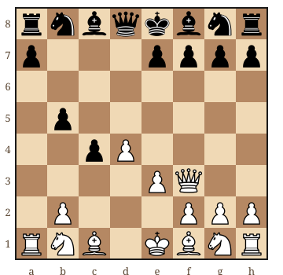
6. Df3 développe la dame sur une diagonale qui vise la tour a8. À cet instant, les Noirs ont encore un pion de plus selon le compte matériel, mais leur tour est menacée. Compter uniquement les pions donnait donc une image incomplète de la position.
La dame peut atteindre f3 parce que le pion e a quitté e2 pour e3. La menace dépend à la fois de ce passage blanc et des cases c6 et b7 libérées par les pions noirs. Reconstituez ces deux trajets avant de mémoriser le coup.
Une interposition qui ne règle pas tout
6. Df3 Cc6 7. Dxc6+
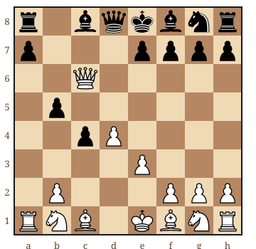
Après …Cc6, le cavalier coupe momentanément la diagonale de la dame vers a8. Mais il arrive en c6 sur une case attaquée par cette même dame. Dans l’illustration 6…Cc6 7. Dxc6+, les Blancs le capturent avec échec, et la dame c6 vise aussi la tour a8.
À la position affichée, les Blancs ont gagné un cavalier en échange du pion supplémentaire que les Noirs détenaient : le bilan habituel est de deux points en faveur des Blancs. Ce compte n’est pas une évaluation de toute la partie. Il démontre simplement pourquoi une apparente défense doit être calculée jusqu’à la capture et aux échecs suivants.
Vérifiez votre compréhension
Pourquoi Df3 peut-elle viser a8 dans cet exemple ?
Les cases e4, d5, c6 et b7 sont libres. La dame suit leur diagonale jusqu’à la tour a8.
Pourquoi …Cc6 ne suffit-il pas à effacer la menace ?
Le cavalier s’interpose sur une case attaquée. Dxc6+ capture ce cavalier avec échec et la dame peut encore regarder a8.
Faut-il conserver le pion c4 à tout prix avec les Noirs ?
Non. La sécurité des pièces et leur développement doivent être comparés au pion supplémentaire. Rendre un pion peut être préférable à une série de coups qui expose une tour.
À appliquer dans vos parties : Quand un adversaire veut garder le pion du gambit, cherchez les lignes ouvertes par ses soutiens. Quand vous jouez les Noirs, posez-vous la question inverse : quelle pièce cesse d’être protégée si mon pion avance ?
Reconnaître les embranchements
Deux variantes à comprendre pour commencer
Ces lignes courtes montrent ce qui change dans le centre et le développement. Rejouez les coups, puis formulez le plan avec vos propres mots ; les réponses adverses peuvent vous amener à une autre position.
Le gambit refusé : les Noirs consolident d5
1. d4 d5 2. c4 e6 3. Cc3 Cf6 4. Cf3
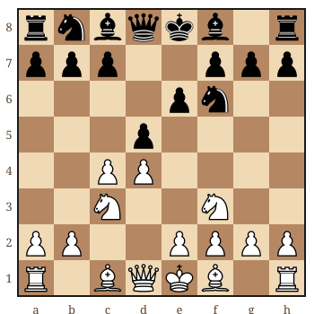
Avec …e6, les Noirs défendent d5 par un pion. Les Blancs développent leurs cavaliers et maintiennent la tension : tant que c4 et d5 restent face à face en diagonale, chaque camp doit tenir compte d’une capture.
Le plan à comprendre : Évitez d’échanger uniquement pour simplifier vos calculs. Après cxd5 exd5, le pion e noir aura quitté e6 et le fou c8 trouvera une diagonale. Vous devez savoir ce que cet échange libère chez l’adversaire avant de le choisir.
Le gambit accepté : développer pour retrouver le pion
1. d4 d5 2. c4 dxc4 3. Cf3 Cf6 4. e3 e6 5. Fxc4
Les Noirs prennent c4, puis développent leurs pièces au lieu de défendre ce pion à tout prix. Les Blancs ouvrent leur fou par e3 et reprennent en c4. La séquence se termine à égalité de matériel.
Le plan à comprendre : Les Blancs disposent de pions d4 et e3 ; les Noirs ont échangé leur pion d contre le pion c blanc. La suite se joue donc sur le développement et les poussées centrales, pas sur la défense éternelle d’un pion de gambit. Pensez au roque et à la réponse à …c5.
Calculer avant de jouer
Piège et vigilance : Un cavalier cloué à la dame peut encore bouger
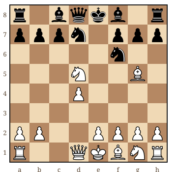
1. d4 d5 2. c4 e6 3. Cc3 Cf6 4. Fg5 Cbd7 5. cxd5 exd5 6. Cxd5
Avant de lire la suite, repérez les échecs, les captures et les pièces attaquées.
Voir la suite et le mécanisme
6… Cxd5 7. Fxd8 Fb4+ 8. Dd2 Fxd2+ 9. Rxd2 Rxd8
Les Blancs prennent d5 en supposant que Cf6 ne peut pas quitter la diagonale du fou g5 vers la dame d8. Mais ce clouage est relatif : le roi n’est pas derrière le cavalier. Dans la suite montrée, …Cxd5 laisse prendre la dame, puis …Fb4+ force les Blancs à traiter l’échec. Après les échanges indiqués, les Noirs ont une pièce mineure de plus contre un pion. Cette combinaison est plus avancée ; son idée essentielle reste la priorité des échecs.
Comment éviter le problème ou y répondre
Après …exd5, 6. e3 développe le jeu sans compter sur un clouage relatif. Avant de prendre une pièce prétendument clouée, recherchez les échecs intermédiaires adverses. La suite montrée explique le mécanisme après Fxd8 ; elle ne prétend pas que chaque réponse blanche conduit à ces mêmes cases.
Suite de référence à rejouer depuis le début :
1. d4 d5 2. c4 e6 3. Cc3 Cf6 4. Fg5 Cbd7 5. cxd5 exd5 6. e3
Passer de l’ouverture au milieu de partie
Une fois le pion récupéré ou le centre stabilisé, cherchez les colonnes semi-ouvertes et les pièces qui manquent de cases. Si les structures sont symétriques, l’activité des pièces reste un enjeu. Si un échange a créé un pion isolé, ce pion aura besoin de soutien : ne le jugez ni comme une catastrophe ni comme un atout avant de regarder les pièces.
Pour progresser avec le gambit dame, rejouez d’abord les échanges de pions sans les autres pièces, puis remettez les fous. Vous verrez immédiatement pourquoi une même capture peut améliorer une diagonale et modifier l’intérêt d’un développement.
Le nom et ses origines
D’où vient le nom « gambit dame » ?
Le gambit dame appartient aux ouvertures anciennes : la fiche historique de Chess.com en relève un témoignage dans le manuscrit de Göttingen, daté approximativement de la fin du XVe siècle. Salvio et Greco l’ont ensuite étudié au XVIIe siècle.
Le nom décrit le côté du plateau concerné : le pion c se situe à l’aile dame. Il n’attribue pas l’ouverture à une personne précise, et surtout il ne propose pas de donner la dame.
L’appellation « gambit » ne garantit pas une perte durable de pion. Après une acceptation, les Blancs peuvent souvent organiser sa récupération ; la position précise décide de la manière.
Les erreurs à éviter dans cette ouverture
Croire que la dame doit être donnée
Le terme « dame » indique l’aile du plateau. La dame blanche reste en d1 au moment où le pion c avance.
Essayer de gagner un pion sans compter
Après un échange central, vérifiez toutes les reprises possibles. Une capture ne donne pas forcément un avantage matériel durable.
Oublier le fou c1 après e3
Le pion e3 aide le fou f1 mais restreint la diagonale du fou c1. Il faudra trouver un rôle à ce second fou.
À vous de jouer
Un exercice pour vérifier l’idée
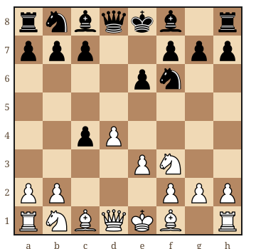
Quel coup reprend le pion c4 en développant une pièce ?
Prenez quelques secondes pour choisir et expliquer votre coup.
Voir la réponse expliquée
5. Fxc4 : le fou f1 parcourt e2 et d3, libérés, puis capture le pion en c4. Les Blancs récupèrent le pion tout en sortant une pièce et en préparant le roque.
Votre prochaine séance de pratique
- Après 2. c4, identifiez quel pion peut prendre et quelle case centrale il abandonne.
- Rejouez l’exemple accepté puis vérifiez le trajet du fou f1 vers c4.
- Comparez …dxc4 et …e6 sans chercher à apprendre leurs variantes.
Besoin de comprendre vos propres parties ? Les cours d’échecs permettent de travailler à partir de vos positions.
Quelles ouvertures comparer ensuite ?
- Défense slave : répondre au gambit dame avec 2…c6
Comprendre la réponse noire …c6 au gambit dame.
- Système de Londres : le plan expliqué aux débutants
Comparer deux approches blanches qui commencent par d4.
Retrouver les onze ouvertures et choisir votre prochaine fiche.
Questions fréquentes
Donne-t-on sa dame dans le gambit dame ?
Non. Les Blancs offrent le pion c4. Le mot dame renvoie à l’aile dame du plateau ; la dame blanche reste en d1 dans la position de départ du gambit.
Quelle différence entre gambit accepté et refusé ?
Après 1. d4 d5 2. c4, les Noirs acceptent par …dxc4. Une réponse comme …e6 refuse l’offre immédiate et soutient le pion d5.
Le gambit dame perd-il forcément un pion ?
Non. Dans plusieurs suites, les Blancs peuvent préparer la reprise du pion c4 grâce au développement. Cela dépend des coups réellement joués par les deux camps.